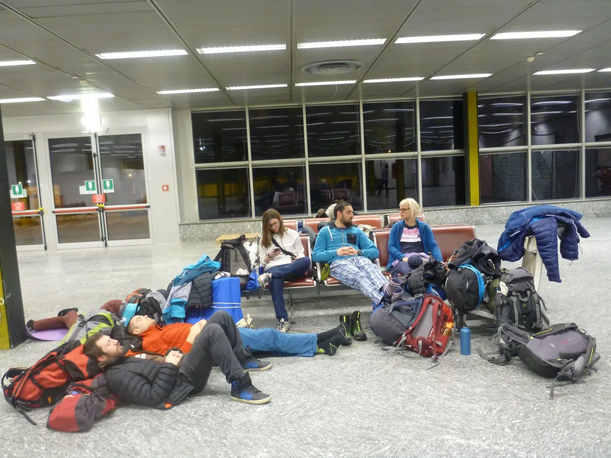

Maroko u mom oku
Na kraju smo došli na sam ulaz u rudnik i tamo pitali kako dalje, a odgovor je bio jako dobar - „Natrag istom cestom 180 km, pa okolo“.

Piše: Darko Španja Fotke: Španja & Co
Dana 17.02.2017. hrabri junaci Velebita uputili su se na drugi kontinent kako bi istražili ljepote Maroka. U petak, udarna ekipa (Ana, Anja i Španja) krenuli su prem Milanu, vjerovali ili ne - u Mercedesu. Mislim, kad se već ide u Milano onda ipak da dođemo u stilu. Vozili smo se ugodnih puno sati i ok 2 ujutro došli na aerodrom gdje smo se našli sa ostalom ekipicom ( Edo, Ela, Čajko, Hrvoje, Tanja, Gorana i Dalibor) koja je također došla svojim autićima. Nakon par sati izležavanja i zafrkancije utrpali smo se u avion i pravac - Maroko. Put je trajao nekih 3 sata. Sva sreća pa sam se izborio za mjesto do prozora jer je pogled na obale Francuske, sredozemno more i sam Maroko, bio ful dobar.
[caption id="attachment_880" align="alignleft" width="351"] Balkanci na Milanskom aerodromu[/caption]Kada smo došli u Marakesh, brzinski smo zamijenili eure u njihove dirhame i poslali Anu da nađe rent-a-car koji smo još u Zagrebu unaprijed platili. Nakon što smo pronašli autić, lijepo smo nas pet ( Ana, Anja, Gorana, Dalibor i ja) pokazali ostaloj ekipi srednji prst, sjeli u auto i magla prema Atlanskom oceanu. Vozikali smo se nekim fensi cestama, okolo sve zeleno i puno šarenog cvijeća i drveća. Nakon par sati vožnje eto nas u gradu pod imenom Essaouira.
[caption id="attachment_887" align="alignright" width="351"] Tko tu koga jaše ili kome sliči[/caption]Totalno fensi grad. Centar je opasan starim zidinama, a kroz njega se proteže jedna jako dugačka ulica na kojoj se prodaje apsolutno sve. Preko dana milijun vrsta hrane, začina i ostalih takvih čudesa, a kad padne mrak, prevrnu naopako štandove i počnu prodavati tenisice, mobitele, satove itd. Kuće su nabijene jedna na drugu i specifičnih oblika: male po širini ali zato svakom sinu njegov kat od 15 kvadrata. U centru smo iznajmili krevete u hostelu Woodstock, poznatom po super-kul-mega-ekstra nabrijanim surferima sa dredovima. Na krovu hostela je doza kulerstva toliko jaka da si počneš razmišljati o upisu u školu surfanja. Jedan se toliko odvažio pa je pustio nekoj curi da ga nasred krova tetovira u „sterilnim uvjetima“: iglom koju je izvadila iz džepa - jer netko ipak mora biti najveća faca u Maroku. Što jest – jest. Svaka mu čast, dao je do znanja tko je glavni. Nakon što smo razgledali grad, pofotkali i kupili sve što nam je trebalo, uputili smo se na jug prema gradu Agadiru. Ceste prema dolje su u rangu našeg Zagorja, zavoj na zavoju, uska cesta, a uz to te još 4 busa prestižu utrkujući se međusobno tko će prvi nekoga ubiti.
[caption id="attachment_891" align="alignleft" width="403"] Kažu nemoj kupovati puno. A ne neću.[/caption]Putem smo dosta stajali u razgledavanju okoline. Naišli smo na one lude koze koje se penju po drveću pa smo se malo družili i sa njima. Bili smo i u gradu banana gdje smo ih pokupovali na kile. Navečer nas konačno evo u Agadiru, tražimo neki hostel. Malo se cjenkamo i učas dobijemo sobu za nas petero. Bacili smo đir po gradu, ništa specijalno s obzirom da je grad prije dosta godina zadesio potres, pa su ga u obnavljanju odlučili izgraditi ful europski. Iskreno, kao da ste u Zadru. Nismo se dugo zadržavali u Agadiru već smo se sutra ujutro nakon kave i šopinga uputili na istok, u pustinju prema Zagori. S obzirom da se našim vjernim suputnicima Gorani i Daliboru nije dalo voziti 2 dana do pustinje, odbacili smo ih do autobusa kojim su se oni vratili u Essaouiru, dok smo mi nastavili u akciju.
[caption id="attachment_890" align="alignnone" width="1080"] Začini[/caption]Svratili smo u grad Taroudant, navodno glavni grad Berbera. Dosta veliki grad, sa ogromnim zidinama oko njega. Uokolo grada sve je mega uređeno, dok kad uđeš unutra imaš dojam da si na nekakvom placu. Zapravo i jesi na placu jer je sve u Maroku jedan veliki plac. Uglavnom, tamo nas je upecao neki lokalac koji je hoćeš-nećeš postao naš osobni vodič. Vodio nas je po cijelom gradu i na kraju ufurao u neki dućan tepiha gdje su nas gnjavili da kupimo j***o skupe tepihe. Naravno da nismo kupili ništa. Uspjeli smo se izvući iz toga te zahvalili našem vodiču, dali mu nešto novčića i nastavili put prema pustinji.
Naletjeli smo i na neki grad malo izvan rute, obzirom da se nalazi na brdu i izgleda kao da je napušten prije 500 godina, morali smo otići izviditi. Grad je stari berberski, sa ogromnim zidinama od zemlje i grana, a unutar zidina puno kuća izgrađenih na istu foru. Mislili smo da je grad napušten sve dok se nije pojavila naša nova prijateljica Fatima. Bucmasta crnoputa berberka koja iako nije znala engleski nam je pričala sve i svašta i vodila nas po selu. Odvela nas je doma gdje smo s njenim tatom, mamom, bakom i malom sestrom pili čaj i jeli kekse. Iako cijelo selo i ljudi u selu izgledaju siromašno,
[caption id="attachment_885" align="alignleft" width="391"] Sve Berber do Berbera.[/caption]Fatima je izvukla mobitel bolji nego što nas troje ima te pitala dali itko ima watsup ili kako se već zove. I tako smo chilali po selu, družili se malo sa seljanima koji su bili oduševljeni što smo tamo (valjda nitko drugi nikad nije došao), podijelili im neke darove i krenuli dalje. A dalje smo se vozili lijepim krajolicima, uzbrdo nizbrdo, kroz kanjone, ogromne nasade svega i svačega, pa i oaze (ali one oriđiđi). Trenutak koji će mi ostati najviše u pamćenju je kada smo došli 40 km od Zagore, cesta kojom smo se vozili odjednom je nestala i pojavio se ogromni rudnik. Onako zbunjeni prvo smo pokušali zaobići rudnik nekim drugim asfaltiranim cestama, ali i one su opet sve završavale u rudniku. Na kraju smo došli na sam ulaz u rudnik i tamo pitali kako dalje, a odgovor je bio jako dobar - „Natrag istom cestom 180 km, pa okolo“.
Naravno, kakvi jesmo nismo se pomirili s činjenicom da moramo nazad, jer karta pokazuje put da se može naprijed. I tako smo odlučili krenuti kroz rudnik na svoju ruku. Prvo smo usred rudnika pokupili nekog dečka sa krampom kojeg smo vozili doma i on nam je u razgovoru potvrdio da ipak postoji stari put do Zagore. Tada nam je moral porastao i nakon što smo izbacili suputnika gdje treba, bahato smo krenuli u nove pobjede. Naravno kad te krene, onda te krene. Nakon sat vremena našli smo se na vrhu neke planine i više nije bilo ceste. Fulali smo put, a sve ceste kojima smo se vozili nisu ni za rally uvjete. Ok, okrenuli smo se natrag te nakon nekog vozikanja ipak našli pravi put. I opet je moral na maksimumu. Nakon nekog kratkog vremena vožnje susrećemo starca sa kozama i pitamo kuda dalje. On nas gleda, a vidimo mu na licu da ne može vjerovati kako s tim autom pokušavamo voziti po toj cesti. Objašnjava on nama na svim mogućim jezicima da ne idemo, ali tko ga šljivi, što on zna? Idemo mi dalje. Nakon 2 kilometra sretnemo neku lokalnu ekipu. Isto pitanje i isti pogledi kao kod onog starca.
[caption id="attachment_888" align="alignnone" width="1080"] Vrhovi u prolazu[/caption]Kažu oni nama kako nismo normalni i uz osmijeh nam zažele sretan put. I tako mi bahato krenemo dalje, no ubrzo smo doznali što su nam svi uporno pokušavali objasniti. Da skratim priču, kopali smo cestu, zatrpavali ogromne rupe, vozili se kroz kanjone, vozili smo se po (hvala Bogu) suhim koritima rijeka, zapeli sto puta u rupama , pijesku, brdima... Sve u svemu, nakon 8 sati smo prešli jedva 30 km. Čak sam se u jednom trenutku našao u pogibeljnoj situaciji gdje je s jedne strane stajao nabrijani, napaljeni jarac odmjeravajući me, a s druge strane litica od jedno 30-tak metara. Iskreno, prvo mi je na pamet bilo pogledat niz liticu. Za svaki slučaj.
I da sve bude bolje, kad smo po GPS-u izašli iz tog kaosa, onako sretni viknemo „F**k yeah, Zagora, evo nas!“ Naravno da nije bilo tako, jer je do Zagore ostalo još 15 km jednako kaotičnog puta ali i uz dodatak mraka. Uglavnom, trebali smo u Zagori biti do 2 popodne, a na kraju smo došli u ponoć.
U hotelu koji nam je bio točka okupljanja, iznajmili smo sebi sobu za lordove, te drugu sobu za ekipu koju smo ostavili u Marakeshu. Ujutro se svi sastali, izgrlili od sreće što smo živi i čitavi. Sa drugom ekipom pojavio se i Mario koji je došao direktno iz Njemačke. Ana je otišla na plac opskrbiti nas hranom jer smo taj dan planirali otići u pustinju.
[caption id="attachment_893" align="alignright" width="401"] Mokasin aka Ivica[/caption]Ona, osim što je donijela hranu, donijela je sa sobom i nekog malog marokanca od metar i pol, imena Mokasin. Lik je na sebi imao plavu plahtu, nekakav turban na glavi i šlape te nam objašnjavao kako je on naš vodič kroz pustinje. Prvo smo se svi jako dobro nasmijali ali smo ga ipak uzeli sa sobom i utrpali u auto. Vozili smo se prema pustinji, putem stali na najvećoj rijeci Maroka, zatim još i u nekom gradiću kojem sam zaboravio ime gdje smo razgledavali neke muzeje i proizvodnju keramike.
Uskoro smo završili u pustinji, doma kod neke ekipe gdje smo uz ležanje jeli hrpu definitivno najbolje hrane u cijelom Maroku te ispijali na litre čaja. Obzirom da je padala i kiša malo smo se rastezali i odugovlačili oko pokreta u pustinju.
[caption id="attachment_889" align="alignleft" width="412"] Za pustinju spremni[/caption]Ipak, nakon dosta sati digli smo se i krenuli. Mokasin (kojeg smo prekrstili u Ivicu), vodio nas je kroz pustinju jedno sat vremena, čas lijevo, čas desno, tek da ispadne da smo otišli daleko, a onda je u jednom trenutku samo stao i rekao: „Evo nas“. Istina, jesmo mi u pustinji ali kad se popneš na malu pješčanu dinu pokraj našeg novog logora, imaš lijepi pogled na dalekovod i cestu, te „premile“ zvukove automobila na njoj. Ali nije bitno, samo nek' je pijesak pa da ljudi koji nisu nikad bili u pustinji mogu reći kako konačno jesu. Naložila se vatra (kontrolirana) i dugo u noć pilo vino, jelo datulje i pjevalo marokanske pjesme (koje je najviše pjevao Ivica). U neke kasne sate lagano smo izvadili karimate i vreće za spavanje pa krenuli na spavanje. Jedino jadan Ivica nije imao ništa, jer valjda je bio uvjeren kako nećemo ni spavati u pustinji. I tako se čovjek jadan smrzavao. Dva puta me je budio da mu dam nešto za obući te sam mu na koncu dao nešto robe da čovjek ne umre od zime. Bilo mi ga je malo žao, ali nije se na početku trebao razbacivati forama kako je on odrastao u pustinji te da njemu ne treba ništa.
[caption id="attachment_883" align="alignnone" width="1024"] Prizor pustinje ujutro[/caption]Ivica je ipak preživio noć, onda smo još malo bauljali po pustinji i najzad krenuli prema autima. Mokasina-Ivicu vratili smo u Zagoru, a zatim krenuli prema gradu Ouarzazete.
[caption id="attachment_884" align="alignnone" width="1080"] Stari berberski grad[/caption]Putem smo stali u stari berberski grad pod zaštitom UNESCO-a. Grad je fora i isplati se platiti ulaz u od par bugara. Fora je i to što, putem do grada morate prijeći rijeku pješice po nekim vrećama punim pijeska. Samo pripazite, na rijeci vas čeka dosadna banda male djece koja će vas ugnjaviti da im date pare za pomoć u prelasku. Em što će vam uzeti lovu, em će vam još i smetati dok idete preko. Putem do Ouarzazata nalazi se još takvih većih napuštenih gradova koje ipak nismo stigli obići ali smo putem naišli i na jedan veliki, dugi i prekrasni kanjon po kojem smo malo hopsali. Navečer smo se smjestili na jez
[caption id="attachment_892" align="alignright" width="391"] Lokalni šaban tjera oblake[/caption]eru, istočno od grada Ouarzazete. Napravili logor, izvadili vino i klopu, zapalili vatru i zabavljali se dugo u noć. Jutrom smo se lagano pokupili u pravcu Marrakesha. Nakon puno sati putovanja po zavojima uz nekoliko stajanja, došli smo u Marrakesh. Pronašli unaprijed plaćeni hostel gdje smo se susreli sa našim bivšim suputnicima Goranom i Daliborom. Dva dana smo proveli u Marrakeshu turistički lutajući ulicama i parkovima.
[caption id="attachment_882" align="alignleft" width="364"] Park u Marakkeshu[/caption]Na glavnom trgu morate izbjegavati ekipu sa zmijama, jer ako ne gledaš bace ti zmiju oko vrata i naplate hrpu para jer eto, imaš zmiju oko vrata. Uglavnom osim super-fensi parkova koje možete obići, grad je kao jedan veliki plac u kojem vas na svakom koraku gnjave da nešto kupite. Isto tako morate imati jako dobre živce i vrhunsku sposobnost upravljanja automobilom, jer ako tamo nikoga ne zgazite tek onda možete kazati da znate voziti auto. Auti, motori, konji i konjine „lete“ po cesti bez ikakve kontrole. Čak i semafori izgleda služe samo da troše struju, a mi turisti stojimo na semaforu i čekamo zeleno svjetlo dok su svi već prešli dva puta bez gledanja.
[caption id="attachment_886" align="alignnone" width="1080"] Što se kupanja tiče - predomislio sam se.[/caption]Zadnji dan našeg putovanja smo ukrcali sve stvari u auto, odvezli se do aviona, vratili auto u rent-a-car i glumili kako je sve u redu, iako je Anja malo počupala prednji branik dok smo vozili rally po rijekama. Ukrcali smo se u avion, a u Maroku ostavili Edu i Dalibora jer su oni još tjedan dana poslovno otišli prema pustinji. Sletivši u Milano ispozdravljali smo se, ukrcali u aute i krenuli prema Zagrebu.
Na kraju vam mogu reći kako je Maroko stvarno „zakon“ država i žao mi je što nismo ostali barem još tjedan dana . Preporučam svima da ovo što sam napisao ne shvatite previše ozbiljno i da prvom prilikom „odjašite“ u Maroko pa da usporedimo doživljaje :)
I za kraj jedna već „legendarna“ slika naše ekipe sa osvajanja najvišeg vrha Maroka. Ali njihov dio priče će vam ispričati oni sami.
[caption id="attachment_881" align="alignnone" width="1080"] Osvajanje najvišeg marokanskog vrha[/caption] [gallery ids="893,892,891,890,889,888,887,886,885,884,883,882,881,880" type="rectangular"]